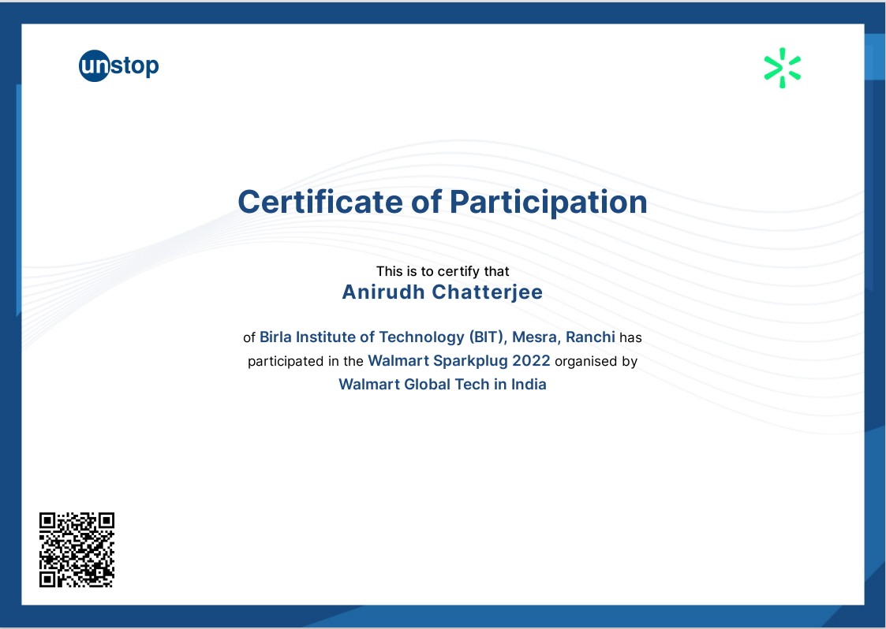

Anirudh Chatterjee
Objective
I am a passionate, hardworking and sincere individual seeking internship and job
opportunities in the fields of Data Analytics, Machine Learning and Full-Stack Web
Development.
Education
- Secondary education - Graduated 10th with 96.33% from Loyola School in the year 2018.
- Higher secondary education - Graduated 12th with 95.60% from Loyola School in the year 2020.
- Undergraduate student (currently) - At BIT Mesra with aggregate CGPA of 9.45 as of 5th semester.
Projects
Classification model: emails labelled spam or not spam
June 2022 - July 2022
- Under Professor Andrew Ng from Stanford University, California. Based on certain features found usually in
spam folders, teaching the machine to classify or label future mails as spam or not. The margin of error was
kept less than 2%.
Yelp Dataset: Capstone Project
May 2022 - June 2022
- Working with a SQLite DBMS for Chinook Database and creating my own business oriented queries as well as solutions
in the stipulated database under the Yelp Dataset.
Linear and Logistic Regression model: Housing Prices prediction model
May 2022 - July 2022
- Under Professor Andrew Ng from Stanford University, California. Based on certain accurate training examples of older
housing prices provided to the model, it was trained to predict future hosuing prices with a margin og error between 1% and 2.3%.
Nearly 250,000 inputs were used to precisely train the model.
CO2 Emissions across the globe: Data Analysis and Visualization
November 2022
- The CO2 emissions data on global scale were obtained through public records available on BigQuery Sandbox. The data was cleaned,
processed and analyzed thoroughly. The conclusive results were then plotted on graphs and were also depicted on Tableau Dashboard
highlighting countries producing CO2 emissions in descending order using color contrast scales.
Technical Skills
- Programming languages: C, JAVA, HTML
- Methodologies: Data Analytics, Data visualization, SQL, DBMS, AI, ML
- Tools: Octave, SQL, SQLite, BigQuery (sandbox)
Acheievements and Certifications
- Awarded "BIT GP Birla Scholarship" in MO22 Semester for a sum of Rs. 1,35,500 from
BIT Mesra on purely meritorious grounds.
- Awarded participation certificate in Walmart Sparkplug 2022 organised by Walmart Global
Tech in India.

- Awarded completion certificate in SQL for Data Science from University of California, Davis.

- Awarded completion certificate for completing Google Data Analytics under Commonwealth of Learning
Program.

- Awarded completion certificate in Machine Learnning from Stanford University.

Other